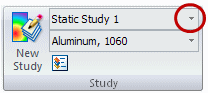

Activate a study
You have to activate a study before you can modify it. Here are two ways you can do this.
- From the ribbon:
-
-
On the ribbon, in the Study group, select the name from the Study Name list.

-
- From the Simulation pane:
-
-
Click the Simulation tab.
-
On the Simulation pane, click the name of the study you want to activate, such as Static Study 1, Modal Study 1, or Buckling Study 1.

-